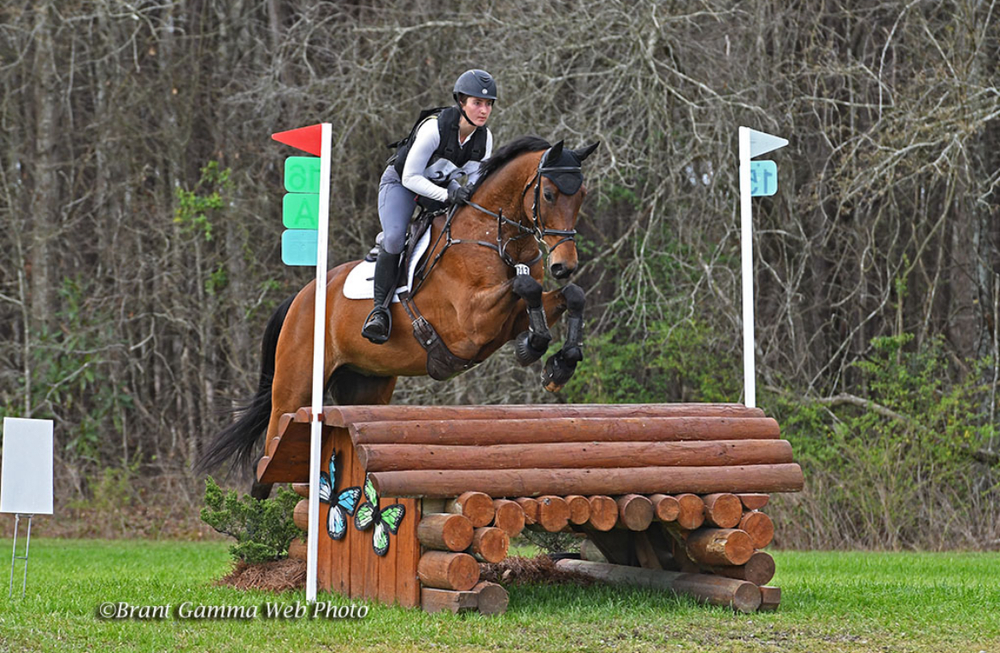

About Me
Hello! I am Kendal Smith. I'm from Seattle, Washington and currently based in Lexington, Kentucky. I am Sophomore with interests in historical linguistics and sociophonetics.
Education
Currently, I am enrolled at the University of Kentucky in the linguistics department. I am apart of the Accelerated Masters Progrom (A.M.P.) and aim to complete a masters in linguistics in 2028.
Classes include
- Sanskrit
- Speech Perception
- Japanese
- Speech Sounds
Sports
I am also an equestrian on the UKY Event team. I ride an English discipline called 'three day eventing' or an equestrian triathalon.

Here I am in South Carolina!
Pets
Back home we have three dogs, Meisje, Grover, and Tank. As well as a cat called Sunny! I'm also a proud cat aunt to my roomates cat, Sasquatch.

Contacts
Email: kmsm270@uky.edu